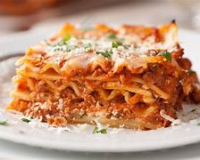

Imágenes de Gatos
Haz click aquí para ver más imagenes de gatos
Gatos de Angora Turco Gato bosque de Noruega Gato Abisino

Gatos de Angora Turco
Gatos de Angora Turco.Provenientes de la lejana Turquía, los gatos de angora son una de las razas felinas más antiguas del mundo. Los gatos angora turcos frecuentemente son confundidos con otras razas de pelo largo como los persas, ya que ambas razas gozan de una notoria popularidad, sin embargo, presentan diferencias que veremos a continuación. Así, en este artículo de ExpertoAnimal veremos las características del gato angora turco que lo definen como raza, las cuales nos permiten distinguirlo de cualquier otra. ¡No te pierdas toda la información sobre el angora turco!
Gato bosque de Noruega
Gato bosque de Noruega. Proveniente de los frondosos bosques escandinavos nos encontramos a los gatos bosque de Noruega, cuyo aspecto recuerda al de un pequeño lince. Pero que este aspecto salvaje no nos engañe, estamos ante un gato increíblemente cariñoso y sociable, tanto es así que incluso hay tutores que los sacan de paseo. Su historia es increíble y fascinante, estando cargada de magia y misticismo vikingo. Es uno de los gatos que no temen al agua, siendo incluso un excelente pescador. Tampoco hay que dejarse engañar por su sólido físico, pues se trata de un animal sorprendentemente ágil que puede llegar a ser todo un acróbata digno de las piruetas más alucinantes. Por todo ello, sigue leyendo e infórmate en ExpertoAnimal sobre las características del gato bosque de Noruega, sus cuidados y curiosidades.
Gato Abisino
Gato Abisino. Todos los gatos comparten unas características conductuales capaces de fascinar a los amantes de los felinos, no obstante, el gato abisinio destila una gran elegancia y armonía y una de sus características más importantes es su carácter amable y juguetón, de hecho, se dice que este gato conserva siempre su carácter de cachorro y a pesar de que madure psíquica y fisiológicamente, exige constantemente atención y cariño y siempre muestra una insaciable curiosidad, rasgos que no podríamos encontrar en otros gatos, menos aún en su etapa adulta. El primer gato abisinio llegó a Inglaterra sobre el 1868 procedente de Etiopía, por entonces Abisinia, y participó en una exposición en la que se hizo famoso. Existen otras fuentes que aseguran que es descendiente de los British Bunny, gatos nativos del Reino Británico. No fué hasta el siglo XX que catalograron al gato abisinio como una raza propiamente dicha.
Haz click aquí para ver el curso de phyton
Listas que los gatos aman
- Menta gatuna
- Apuntadores laser
Lasaña

Listas que los gatos odian:
- Tratamiento antipulgas
- Truenos
- Otros gatos